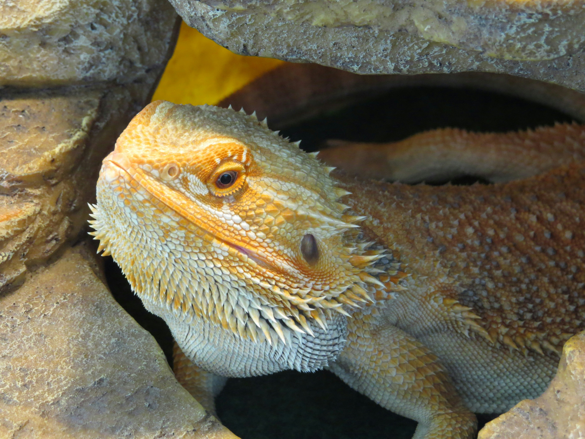
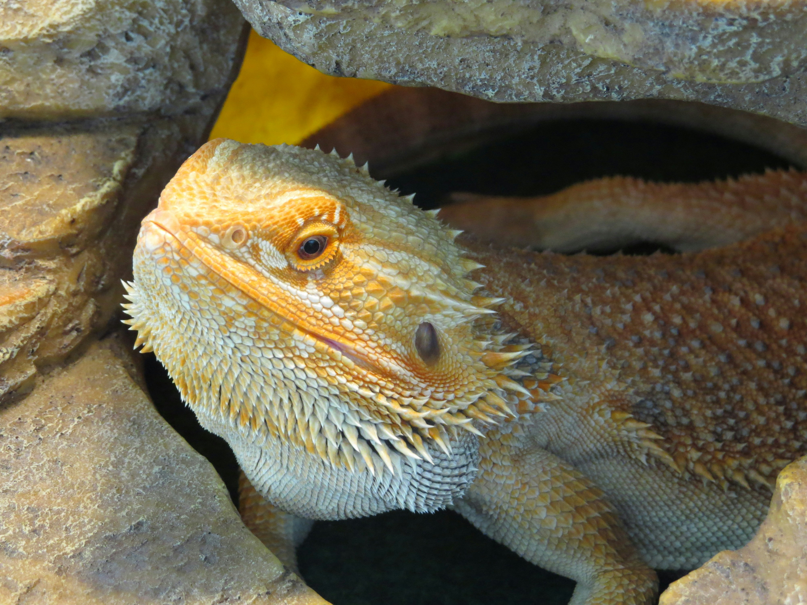

-
What size tank does a bearded dragon need?
A bearded dragon needs a tank that is at least 40 gallons for adults. Juveniles can start in smaller tanks but will require larger space as they grow.
-
What should I feed my bearded dragon?
Bearded dragons are omnivores, and their diet should include a variety of leafy greens, vegetables, and insects such as crickets, mealworms, or dubia roaches. You can also offer fruit as a treat.
-
How often should I handle my bearded dragon?
You can handle your bearded dragon daily for short periods, but avoid overhandling them, especially when they are young or adjusting to their environment.
-
Do bearded dragons need UVB lighting?
Yes, bearded dragons need UVB lighting to help them metabolize calcium and prevent health problems like metabolic bone disease. The UVB light should be on for 10-12 hours a day.
-
What temperature should my bearded dragon’s tank be?
Your bearded dragon’s tank should have a basking area with a temperature of 100-110°F (37-43°C) and a cooler side around 75-85°F (24-29°C).

 
